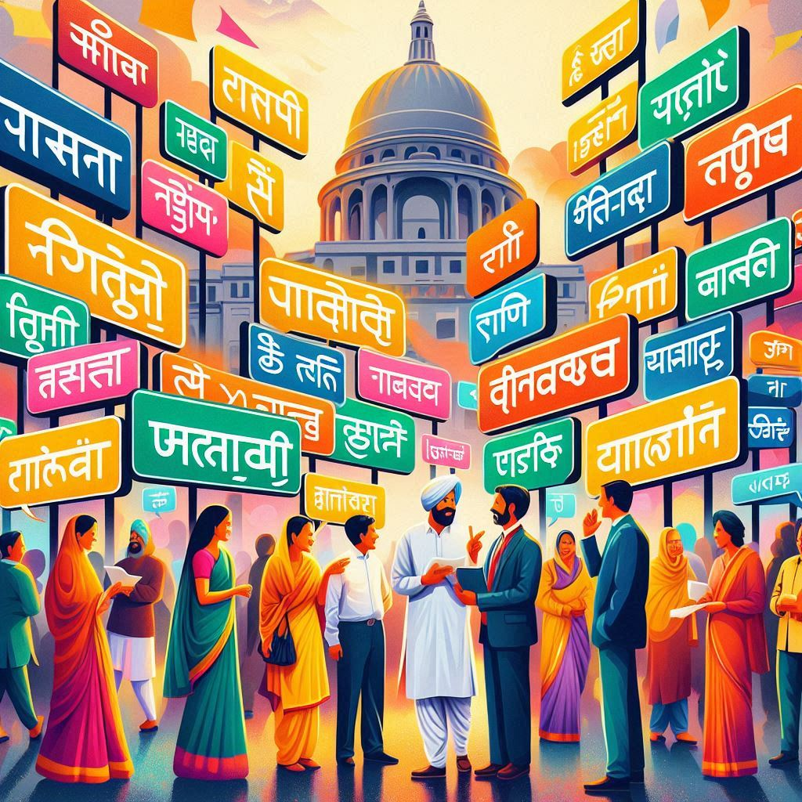
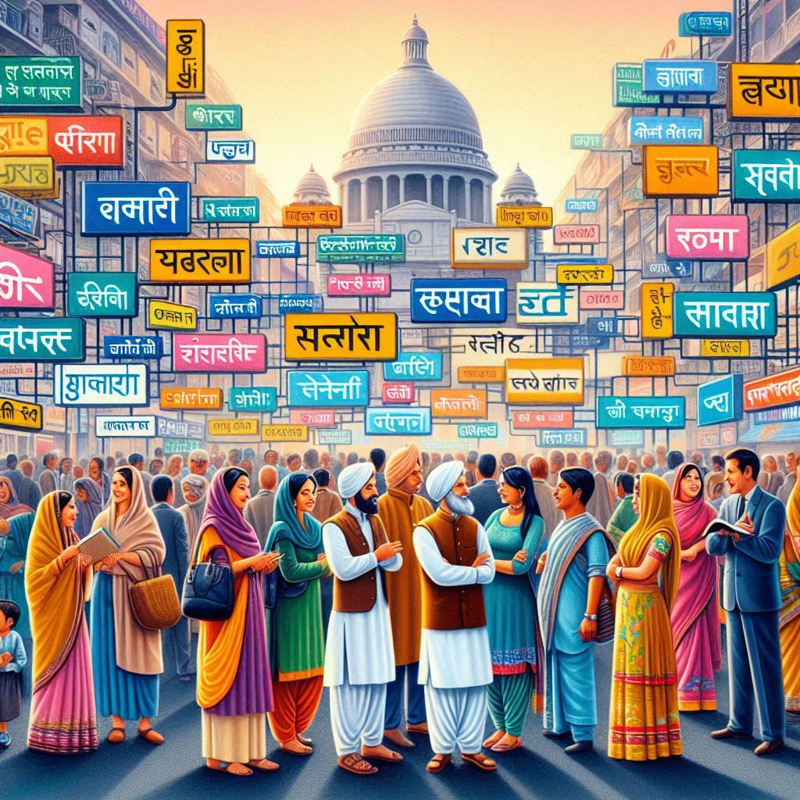

Delhi is a cosmopolitan city, and its linguistic landscape reflects its rich cultural diversity. The people of
Delhi speak a variety of languages, influenced by its history, regional cultures, and the presence of migrants
from all over India. Here’s an overview of the main languages spoken in Delhi:
1. Hindi
- Most Widely Spoken Language: Hindi is the most widely spoken language in Delhi and serves as the primary language for communication. It is also the official language of the government of Delhi and India.
- Dialects: The Hindi spoken in Delhi is often a mix of Standard Hindi and Hindustani, which is a blend of Hindi and Urdu. In urban areas, you’ll hear a colloquial version of Hindi, often called Dilliwala Hindi, which includes many borrowed words.
- Use: Hindi is used in schools, government offices, media, and daily interactions. It is the language of popular culture, including Bollywood films, television shows, and music.
2. Urdu
- Historical Significance: Urdu developed during the Mughal period as a language of culture and poetry and has strong roots in Persian, Arabic, and Turkish.
- Cultural Role: Urdu is often used in poetry, music, and literature. Many people in areas like Chandni Chowk speak a version of Hindi-Urdu, known as Hindustani.
- Religious Context: Urdu is the language of the Muslim community in Delhi and is often used in religious texts and prayers.
3. Punjabi
- Large Punjabi Community: Delhi has a significant Punjabi-speaking population, especially in areas like Punjabi Bagh and Karol Bagh.
- Use: Punjabi is widely spoken in conversations, local media, literature, and religious practices, particularly within the Sikh community.
4. English
- Lingua Franca in Urban Settings: English is widely spoken in education, business, and government sectors, especially among the urban elite.
- Global Influence: English is often used for official purposes, business transactions, and online communication, making it a key language in Delhi.
5. Bengali
- Presence of Bengali Community: A sizable Bengali-speaking community resides in areas like Seelampur and Moolchand.
- Cultural Influence: The Bengali community is active in arts, theater, and literature. Festivals like Durga Puja highlight their cultural contributions.


6. Haryanvi
- Haryana Influence: With Delhi sharing borders with Haryana, Haryanvi, a Hindi dialect, is heard in areas like Sultanpur.
- Characteristics: Haryanvi has a rural tone with a guttural sound, used in casual settings.
7. Rajasthani
- Migration from Rajasthan: Many migrants from Rajasthan speak languages like Marwari and Mewari, which are commonly heard in homes and cultural gatherings.
- Use: While primarily spoken at home, Rajasthani is also used in markets and during festivals like Teej.
8. Tamil, Telugu, Malayalam, and Other South Indian Languages
- South Indian Population: Languages like Tamil, Telugu, and Malayalam are spoken by migrants who contribute to Delhi's cultural and culinary diversity.
9. Other Languages
- Bhojpuri: Spoken by migrants from Bihar and eastern Uttar Pradesh.
- Gujarati: A significant Gujarati-speaking community adds to Delhi's diversity, particularly in business and trade.
10. Sign Language
- Delhi’s Deaf Community: Indian Sign Language (ISL) is used among the city’s deaf population, with dedicated institutions supporting them.
Conclusion
Delhi's linguistic diversity is one of its defining features. While Hindi and English dominate, the city is home to a wide array of regional languages, contributing to its vibrant cultural tapestry.